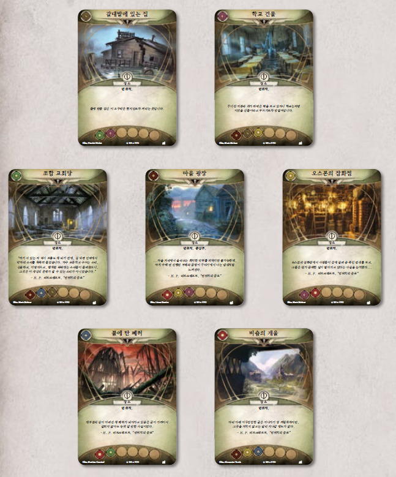

도입부: 마침내 던위치에 도착하자 지블런 웨이틀리와 더불어 또 다른 주민인 얼 소여가 당신을 맞이합니다. 얼은 몇 달 전 사태가 벌어졌을 때 아미티지 교수를 만났었다고 합니다. “여기 요즘 뭐가 영 이상하거든요.” 얼이 당신에게 말을 꺼냅니다. “며칠 전 밤에 몇 사람이 또 사라졌어요. 젠장할 쏙독새는 도무지 닥치질 않고요. 여기 뭐 할라고 왔는가는 몰라도 당신네 아컴 사람들이 제일 마지막에 온 뒤로 뭐가 꼬였어. 엄청 꼬였다고요.” 그는 정신없이 눈을 깜박이고 기침을 하며 시선을 가만히 두질 못합니다.
“그러니 밤엔 좀 쉬고, 찾는 게 있다면 날 밝은 후에 더 찾는 게 어떻겠소.” 지블런이 맞장구를 치면서 주름진 손을 당신의 어깨에 올립니다. 괜찮다며 버티려 했지만, 삭신이 쑤신 데다 정신적으로도 고된 탓에 도저히 그 제안을 거절할 수가 없습니다. 지블런 노인은 자기 집에서 밤을 보내라고 하면서 던위치 마을 외곽에 있는 집으로 태워주었습니다. 마을은 어수선하고 으스스해서 부지불식간에는 여기 오지 말았어야 했나하는 생각마저 듭니다. 지블런의 집에 도착하고 나서 잠이 들 때까지 뭘 했는지는 도무지 기억이 나지 않습니다.
다음 날 잠에서 깨어났을 때, 지블런의 집은 텅텅 비어있고 지블런 웨이틀리를 비롯해 얼 소여의 흔적은 어디에도 보이지 않습니다. 당신은 머릿속으로 최악의 상황까지 하나하나 짚어가면서 무슨 일인지 살펴보고자 마을 중심부로 향합니다.
조사자 준비로 이어집니다.
조사자 준비
- 조사자마다 각자 사용 가능한 동행 하나씩을 선택해도 됩니다(조사자 수보다 사용 가능한 동행 수가 적다면, 선택할 수 있는 데까지만 선택합니다). 각자 본인이 선택한 동행을 플레이 영역 중 자신의 플레이 영역에 둡니다. (이러한 동행 자산은 여러 조우 세트에 걸쳐서 포함되어 있습니다.)
시나리오 준비
- 다음 조우 세트의 모든 카드를 모읍니다. 제단에 흘린 피, 쏙독새, 돌아온 제단에 흘린 피, 되살아난 악, 제단에 흘린 피(도전 모드), 던위치의 공포, 공황에 빠진 던위치, 던위치의 흉조, 수많은 입의 사교. 이 세트에는 다음 아이콘이 그려져 있습니다.

(파란색은 돌아온 던위치의 유산, 빨간색은 던위치의 유산 도전 모드에 속한 조우 세트입니다)
던위치의 공포 조우 세트를 모을 때, 해당 조우 세트에서 오직 ‘소름끼치는 고요’ 사본 3장만을 모읍니다(‘형언할 수 없는 기척’ 사본 2장과 ‘혼란’ 사본 2장은 모으지 않습니다).
- 제단에 흘린 피 조우 세트에 포함된 시나리오 참조 카드를 게임에서 제거합니다. 제단에 흘린 피(도전 모드) 조우 세트에 포함된 시나리오 참조 카드를 사용합니다.
- 제단에 흘린 피 세트에 포함된 ‘마을 광장’ 장소 카드를 게임에서 제거합니다. 돌아온 제단에 흘린 피 세트에 포함된 ‘마을 광장(고요한 부패)’을 플레이 영역에 둡니다. 모든 조사자는 ‘마을 광장’에서 시작합니다.
- ‘마을 광장’ 이외의 장소는 각 장소별로 사본이 3장씩 있습니다. 각 장소별 사본 3장 중 2장을 무작위로 선택하여 게임에서 제거합니다. 그런 다음, 앞서 제거하지 않은 장소 6장 중 1장을 무작위로 선택하여 추가로 게임에서 제거합니다. 남은 장소 5장을 플레이 영역에 둡니다(다음 쪽의 추천 장소 배치를 참조하여 놓습니다). 한 장소가 빠졌기 때문에 게임 준비 때 배치하는 장소는 ‘마을 광장’을 포함해 총 6곳입니다.
- ‘쏙독새’ 사본 3장 중 1장, 제단에 흘린 피 세트에 포함된 ‘납치당하다!’ 카드 사본 3장과 ‘부패한 시체’ 사본 3장, ‘수많은 입의 시종’ 사본 3장, ‘지블런 웨이틀리’ 카드와 ‘얼 소여’ 카드를 게임에서 제거합니다.
- 캠페인 기록지를 확인합니다. 캠페인 기록지에 “납치되었다”라고 적힌 모든 인물 카드를 모아서 (‘동행’ 키워드를 가진 버전의) ‘지블런 웨이틀리’ 카드와 ‘얼 소여’ 카드도 함께 뒷면으로 섞어 “잠재적 희생양” 카드 더미를 구성합니다.
- ‘제물과 납치’ 이야기 카드를 플레이 영역에 둡니다.
- 난이도를 확인합니다.
- 쉬움/보통 난이도로 게임을 즐긴다면, “잠재적 희생양” 카드 더미 맨 위 카드를 2장 가져와, 플레이 영역 중 ‘마을 광장’으로 이어지지 않은 장소 2곳에(3곳 이상이라면 그중 2곳을 선택해서) 1장씩 뒷면으로 나누어 둡니다.
- 어려움/전문가 난이도로 게임을 즐긴다면, “잠재적 희생양” 카드 더미 맨 위 카드를 3장 가져와, 아무 장소 (가능하다면, 플레이 영역 중 ‘마을 광장’으로 이어지지 않은 장소) 3곳에 1장씩 뒷면으로 나누어 둡니다.
- ‘나이트건트 처형자’ 사본 1장을 플레이 영역 중 ‘마을 광장’에 둡니다. 나머지 사본 2장은 비플레이 상태로 치워 둡니다.
- ‘사일러스 비숍’, ‘이븐 가지의 분말’을 비플레이 상태로 치워 둡니다.
- (‘돌아온 제단에 흘린 피’ 참조 카드의 지시를 무시하고) 모든 ‘살인 청부업자’ 사본을 게임에서 제거합니다.
- 제단에 흘린 피(도전 모드) 세트에 포함된 목표 카드 4장 중 1장을 무작위로 선택해 게임에서 제거합니다. 나머지 목표 카드 3장과 ‘숨겨진 방’과 ‘방 열쇠’ 카드를 합쳐 섞은 다음, 플레이 상태인 장소 중 ‘마을 광장’을 제외한 모든 장소 밑에 무작위로 1장씩 뒷면이 보이게 둡니다.
- 주요사건 1a에 파멸 토큰을 1개 추가합니다.
- 캠페인 기록지를 확인합니다. 조사자들이 던위치에 예정보다 늦게 도착했다면, 주요사건 1a에 파멸 토큰을 1개 추가합니다.
- ‘제단에 흘린 피(도전 모드)’ 참조 카드를 주요목적 덱 근처에 둡니다. 이 카드는 다음과 같은 규칙을 추가로 제공합니다:
- ‘숨겨진 방’은 텅 빈 장소로 간주하지 않으며 ‘제물’이 놓일 수도 없습니다.
- 남은 조우 카드를 함께 섞어, 조우 덱을 만듭니다.
- 이제 당신은 게임을 시작할 준비가 되었습니다.
숨겨진 방
이번 시나리오에는 단면 장소 카드 1장(‘숨겨진 방’)이 포함되어 있으며, 이 카드는 게임 준비 과정에서 다른 무작위 장소의 아래에 뒷면으로 놓입니다. ‘숨겨진 방’에는 공개 면만 있으며, 그 카드를 뽑았을 때 플레이 영역에 두게 하는 폭로 기능이 있습니다.
단면 장소를 플레이 영역에 둘 때는 해당 카드에 미공개 면이 없으므로 공개 면이 보이도록 플레이 영역에 둡니다. 이 점을 제외한 다른 모든 경우에 있어서 일반적인 장소와 동일합니다.
“납치당합니다”
몇몇 게임 효과에는 조력자 자산이 “납치당합니다”라는 문구가 나와 있습니다. 조력자 자산 하나가 납치당할 때에는, 우선 그 자산을 뒷면으로 뒤집어 “잠재적 희생양” 카드 더미에 섞어넣습니다. 그런 다음, “잠재적 희생양” 카드 더미 맨 위 카드를 1장 뽑아 플레이 영역 중 자신으로부터 가장 먼 장소에 (뒷면으로) 둡니다. 이렇게 둔 카드를 ‘제물’이라고 칭합니다. 이렇게 둔 카드는 “잠재적 희생양”인 것으로 간주하지 않습니다.
- 일반적으로 동행 자산은 플레이 영역에서 나갈 수 없지만, 납치되는 경우에는 예외입니다. 동행 자산도 납치당할 수 있습니다.
추천 장소 배치
주의: 아래 장소 중 하나는 무작위로 제거되기에 플레이 영역에 두지 않습니다!

시나리오가 끝날 때까지 읽지 마시오
아무 결말에도 도달하지 못했다면(모든 조사자가 후퇴하거나 쓰러졌다면): 쏙독새의 울음소리는 저 멀리 사라지고, 던위치 마을에는 스산한 정적이 맴돕니다. 들리는 거라고는 건조하고 쌀쌀한 바람이 불어오는 소리와 낙엽이 느릿하니 바스락거리는 소리뿐입니다. 실종된 주민의 흔적은 어디에도 없습니다. 우리는 이들을 다시는 되찾을 수 없을 겁니다.
- 캠페인 기록지에 의식이 완전히 거행되었다라고 기록합니다.
- 게임이 끝날 때 ‘제물’이 남아 있었다면, 그 ‘제물’ 모두를 주요사건 덱 밑에 놓습니다.
- 게임이 끝날 때 ‘잠재적 희생양’이 남아 있었다면, 그들을 주요사건 덱 밑에 놓습니다.
- 캠페인 기록지의 “요그 소토스에게 바쳐진 제물” 아래에, 주요사건 덱 밑에 있는 모든 고유 카드의 명칭을 기록합니다. 이 카드들은 모든 플레이어의 덱에서 제거되며 남은 캠페인 동안 어느 플레이어의 덱에도 포함할 수 없습니다. 또한 캠페인 안내서의 “동행” 항목에서 이렇게 제거된 인물에 취소선을 긋습니다.
- ‘헨리 아미티지 박사’가 “요그 소토스에게 바쳐진 제물” 아래에 적혀 있지 않다면, 캠페인 기록지에 헨리 아미티지 박사가 던위치의 유산에서 살아남았다라고 기록합니다.
- 플레이 영역에 ‘네크로노미콘(올라우스 워미우스 번역본)’이 있는 조사자가 쓰러졌다면, 캠페인 기록지에 네크로노미콘을 도난당했다라고 기록합니다. 캠페인 안내서의 “동행” 항목에서 ‘네크로노미콘(올라우스 워미우스 번역본)’에 취소선을 긋습니다.
- 각 조사자는 승점 더미에 있는 카드의 승점값만큼 경험치를 얻습니다. 각 조사자는 신화 속 감춰진 세계에 대한 통찰력을 얻었기 때문에, 경험치를 추가로 2씩 얻습니다.
- 시나리오 V: “차원 너머의 보이지 않는 존재”로 이어집니다.
결말 1: 당신이 마지막 타격을 입히자 괴물의 몸뚱이가 폭발해, 밧줄처럼 굵은 수백 개의 부속지가 사방으로 흩어집니다. 흉측하게 생긴 그것들이 바닥에서 꿈틀거리거나 벽을 타고 오릅니다. 당신은 너무 놀란 바람에 그것들이 방에서 빠져나가는 걸 다 막아내진 못합니다. 어찌 되었든 간에, 눈앞에 있던 정체불명의 괴물이 죽었다는 사실에 안도감을 느낍니다.
- 캠페인 기록지에 조사자들이 사일러스 비숍의 비극적인 삶을 끝내주었다라고 기록합니다.
- 캠페인 기록지의 “요그 소토스에게 바쳐진 제물” 아래에, 주요사건 덱 밑에 있는 모든 고유 카드의 명칭을 기록합니다. 이 카드들은 모든 플레이어의 덱에서 제거되며 남은 캠페인 동안 어느 플레이어의 덱에도 포함할 수 없습니다. 또한 캠페인 안내서의 “동행” 항목에서 이렇게 제거된 인물에 취소선을 긋습니다.
- 플레이 영역에 ‘네크로노미콘(올라우스 워미우스 번역본)’이 있는 조사자가 쓰러졌다면, 캠페인 기록지에 네크로노미콘을 도난당했다라고 기록합니다. 캠페인 안내서의 “동행” 항목에서 ‘네크로노미콘(올라우스 워미우스 번역본)’에 취소선을 긋습니다.
- 각 조사자는 승점 더미에 있는 카드의 승점값만큼 경험치를 얻습니다. 각 조사자는 신화 속 감춰진 세계에 대한 통찰력을 얻었기 때문에, 경험치를 추가로 2씩 얻습니다.
- 막간 II: 생존자들로 이어집니다.
결말 2: 한때 사일러스였던 괴물이 사슬을 끊고 달려들고 있었고, 당신에게는 제대로 대응할 만한 시간이 거의 없었습니다. 문득 네크로노미콘에는 사일러스를 제압할 수 있는 마법이나 주문이 있을 거라는 사실이 떠올라, 저 흉물의 공격을 막아내며 도움이 될 만한 구절을 찾아 책을 뒤집니다. 당신은 마침내 적절한 마법을 찾아내어 한 치의 망설임도 없이 라틴어 의식구를 읊기 시작합니다. 기묘하게도 그 언어는 마치 과거의 기억으로부터 떠올린 것인 양 자연스럽게 입에서 흘러나옵니다. 술법이 구축되자 괴물이 끔찍하고 무시무시한 비명을 지르기 시작했고, 괴물의 몸뚱이가 차츰 녹아내리며 줄어듭니다. 마침내 그곳에는 사일러스 비숍의 망가진 시신만 덩그러니 남습니다. 당신은 그의 셔츠 안쪽에서 기이한 별자리 모양으로 장식된 은제 펜던트를 찾았습니다. 유용하게 쓰일 길이 있길 바라며 일단 주머니에 챙겨 넣습니다.
- 캠페인 기록지에 조사자들이 사일러스 비숍을 본모습으로 회복시켰다라고 기록합니다.
- 캠페인 기록지의 “요그 소토스에게 바쳐진 제물” 아래에, 주요사건 덱 밑에 있는 모든 고유 카드의 명칭을 기록합니다. 이 카드들은 모든 플레이어의 덱에서 제거되며 남은 캠페인 동안 어느 플레이어의 덱에도 포함할 수 없습니다. 또한 캠페인 안내서의 “동행” 항목에서 이렇게 제거된 인물에 취소선을 긋습니다.
- 각 조사자는 승점 더미에 있는 카드의 승점값만큼 경험치를 얻습니다. 각 조사자는 신화 속 감춰진 세계에 대한 통찰력을 얻었기 때문에, 경험치를 추가로 2씩 얻습니다.
- 막간 II: 생존자들로 이어집니다.
결말 3: 한때 사일러스였던 괴물이 사슬을 끊고 달려들고 있었고, 당신에게는 제대로 대응할 만한 시간이 거의 없었습니다. 저 흉물의 공격을 막아내며 방 안에서 쓸 만한 단서를 찾던 당신은 마침내 일지를 찾아냈습니다. 일지 안의 많은 구절은 라틴어로 쓰여 있으며, 그 목적은 불분명하지만 네크로노미콘의 일부 내용을 발췌하여 수기한 것으로 보입니다. 당신은 마침내 적절한 마법을 찾아내어 한 치의 망설임도 없이 라틴어 의식구를 읊기 시작했지만, 더듬더듬 한 문장씩 뱉을 때마다 목구멍이 조여오는 것만 같습니다. 의식이 진행되자 괴물이 끔찍하고 무시무시한 비명을 지르기 시작했고, 괴물의 몸뚱이가 차츰 녹아내리며 줄어듭니다. 마침내 그곳에는 축축하고 끈적이는 고름덩이와 썩어가는 악취만 남습니다.
- 캠페인 기록지에 조사자들이 사일러스 비숍을 소멸시켰다라고 기록합니다.
- 캠페인 기록지의 “요그 소토스에게 바쳐진 제물” 아래에, 주요사건 덱 밑에 있는 모든 고유 카드의 명칭을 기록합니다. 이 카드들은 모든 플레이어의 덱에서 제거되며 남은 캠페인 동안 어느 플레이어의 덱에도 포함할 수 없습니다. 또한 캠페인 안내서의 “동행” 항목에서 이렇게 제거된 인물에 취소선을 긋습니다.
- 플레이 영역에 ‘네크로노미콘(올라우스 워미우스 번역본)’이 있는 조사자가 쓰러졌다면, 캠페인 기록지에 네크로노미콘을 도난당했다라고 기록합니다. 캠페인 안내서의 “동행” 항목에서 ‘네크로노미콘(올라우스 워미우스 번역본)’에 취소선을 긋습니다.
- 각 조사자는 승점 더미에 있는 카드의 승점값만큼 경험치를 얻습니다. 각 조사자는 신화 속 감춰진 세계에 대한 통찰력을 얻었기 때문에, 경험치를 추가로 2씩 얻습니다.
- 막간 II: 생존자들로 이어집니다.